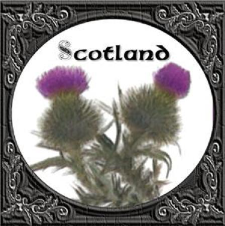

The Thistle of Scotland
Le Chardon d'Ecosse
A Patriotic Song
Tune - Mélodie"Black Jock"
from Hogg's "Jacobite Reliques" part 1, N°64
Sequenced by Christian Souchon
| "This modern song has no right to be here, for it is a national, not a Jacobite song; but I inserted it out of a whim, to vary the theme a little...It has been published in several collections. I wish it were: but I am told that it was written by Mr Sutherland, landsurveyor, a gentleman of whom I know nothing..."(!) | "Ce chant moderne n'a rien à voir avec cette collection: c'est un chant patriotique, non un chant Jacobite. Mais je l'ai ajouté par caprice, pour changer un peu de thème exceptionnellement... ON le trouve publiés dans plusieurs recueils. J'aurais bien aimé que ce soit un chant Jacobite. Mais on me dit qu'il a été ecrit par un M. Sutherland, arpenteur, dont je ne sais rien |

|
THE THISTLE OF SCOTLAND
1. Let them boast of the country gave Patrick his birth, Of the land of the ocean, the neighbouring earth, With their red blushing roses, and shamrock so green: Far dearer to me are the hills of the north, The land of blue mountains, the birth-place of worth; The mountains where freedom has fixed her abode, Those wide-spreading glens where no slave ever trod, Where blooms the red heather and thistle so green. 2.Though rich be the soil where blossoms the rose, And barren the mountains, and cover'd with snows, Where blooms the red heather and thistle so green; Yet friendship sincere, and loyalty true, And for courage so bold that no foe can subdue, Unmatch'd is our country, unrivall'd our swains, And lovely and true are the nymphs of our plains. Where rises the thistle, the thistle so green. 3. Far fam'd are our sires in the battles of yore, And many the cairnies that rise on our shore, O'er the foes of the land of the thistle so green: And many the cairnies shall rise on our strand, Should the torrent of war ever burst on our land. Let foe come on foe, as wove comes on wave, We'll give them a welcome, we'll give them a grave Beneath the red heather and thistle so green. 4. O, dear to our souls are the blessings of Heaven, Is the freedom we boast, is the land that we live in, The land of red heather and thistle so green! For that land and that freedom our fathers have bled ; And we swear by the blood that our fathers have shed, No foot of a foe shall e'er tread on their grave ; But the thistle shall bloom on the bed of the brave, The thistle of Scotland, the thistle so green. Source: "The Jacobite Relics of Scotland, being the Songs, Airs and Legends of the Adherents to the House of Stuart" collected by James Hogg, published in Edinburgh by William Blackwood in 1819. |
LE CHARDON D'ECOSSE
Un chant sans grand intérêt dont le sens général est que l'Ecosse est un bien beau pays... Une affirmation à laquelle on ne peut que souscrire.  |